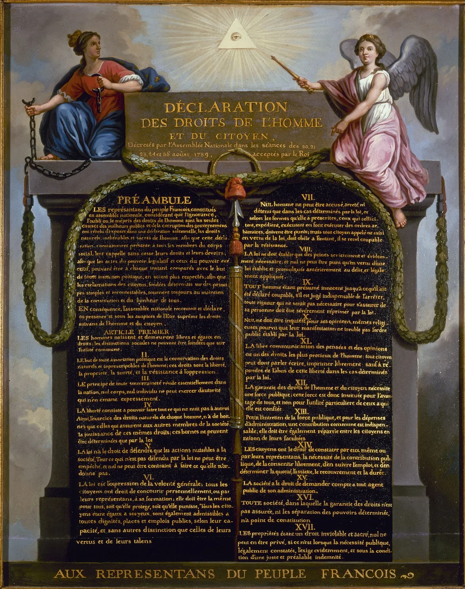

Sessão 03 / Liberdade de expressão, limites e recurso
Podes dizer tudo?
Quem pode limitar uma publicação e com que razões?
Começar
Recupera
De memória, sem abrir o caderno.
De memória
Entrega o diário de um feed, com a análise (se a análise ficou a meio na sessão 02, acaba-a primeiro). Depois, de memória:
O que tem um sistema de recomendação, e o que não tem?
Confirmar
Tem dados, regras e uma meta, o tempo que ficas. Não tem uma opinião sobre o que é bom para ti.
De que duvida Sandel quando se põe tudo numa só conta?
Confirmar
De que tudo o que valorizamos caiba numa medida única. Um número ajuda a comparar, mas não decide sozinho o que vale.
Que tema mais se repetiu no teu diário?
Vê
Observa primeiro. Lê depois.
Material 1 de 3: A Declaração de 1789
Procura o olho no triângulo, no topo. Quem vigia quem?

A pintura mostra a Declaração de 1789 como tábuas da lei. O artigo 11.º chama à livre comunicação dos pensamentos «um dos direitos mais preciosos» e, na mesma frase, fala da responsabilidade pelos abusos.
Material 2 de 3: Declaração Universal dos Direitos Humanos, artigo 19.º
Lê duas vezes. Na segunda, marca as três ações que o artigo protege sobre as informações e as ideias.
Todo o indivíduo tem direito à liberdade de opinião e de expressão, o que implica o direito de não ser inquietado pelas suas opiniões e o de procurar, receber e difundir, sem consideração de fronteiras, informações e ideias por qualquer meio de expressão.
Material 3 de 3: O contexto em falta
Lê o caso. Ainda não decidas se sai do ar.
Decide
Primeiro em silêncio, cada pessoa. Depois em grupo.
Sem ecrã
Primeiro, em silêncio
Lê a frase: «Se um algoritmo decide quem vê o que eu digo, a minha liberdade de expressão continua intacta.» Escreve no cartão de decisão «sim», «depende» ou «não», e uma razão.
Três minutos, em silêncio.
A seguir, a linha: «sim» de um lado, «não» do outro, «depende» ao meio. Quem preferir fica sentado e mostra o cartão. Ouvidas as razões, quem quiser muda de lugar e diz porquê.
Depois, em grupo
- Liguem cada situação a um direito ou a um limite da lei: publicar uma crítica dura ao horário da escola; fazer uma curta-metragem que ninguém pediu e mostrá-la; publicar um vídeo a pedir que se expulsem «os de fora» da escola.
- No excerto de oito segundos, o que está demonstrado, e o que falta verificar?
- Uma publicação da turma a criticar o horário é retirada por «conteúdo impróprio», sem explicação. Qual é a primeira ação?
No fim, registem a decisão e uma razão que ficou vencida.
Comparar razões
A crítica ao horário é liberdade de expressão (Declaração Universal, artigo 19.º; Constituição, artigo 37.º): criticar uma instituição está no centro desse direito. A curta-metragem é liberdade de criação cultural (Constituição, artigo 42.º). O vídeo contra «os de fora» passa o limite: apelar à violência ou ao ódio contra pessoas por uma característica do grupo não é opinião, é crime (Código Penal, artigo 240.º). Entre a crítica e o crime, a moderação tem de explicar e permitir recurso. O Regulamento dos Serviços Digitais dá três direitos: denunciar, receber uma explicação e recorrer.
Faz
Em papel ou no ficheiro do grupo.
Em papel
- Escrevam a carta de recurso para a publicação retirada: o que foi decidido, que regra devia ter sido dita, porque é opinião e o que pedem.
- Façam a cena das quatro cadeiras, em dois minutos: quem publicou, quem denunciou, quem modera; depois, a quarta cadeira, a do recurso.
- Escrevam as regras da casa do Contra-feed, cinco no máximo: o que a peça nunca mostra (pessoas expostas, nomes, capturas com pessoas) e como o público pode responder ou contestar.
Rever com outra pessoa
Outra pessoa lê a carta no papel da plataforma e tem de conseguir responder-lhe.
Quem revê marca uma coisa que se percebe e uma que falta, e faz uma pergunta.
GuardarCasa 3 do mapa do Contra-feed: As regras da casa
As regras da casa do Contra-feed, cinco no máximo.
- 1A regra (casa anterior)
- 2O sinal e o custo (casa anterior)
- 3As regras da casa (casa de hoje)
- 4A pergunta e o público (casa seguinte)
- 5Os meios e os créditos (casa seguinte)
- 6O caso (casa seguinte)
- 7Conceito e guião v1 (casa seguinte)
- 8Ensaio e guião v2 (casa seguinte)
- 9Defesa e manifesto (casa seguinte)
- 10O que o público viu (casa seguinte)
Contorno cheio: casas anteriores. Preenchida: a casa de hoje. Tracejado: casas seguintes.
Leva
Em papel, antes de sair.
Em papel
Em papel, antes de sair
Numa frase: onde fica o limite entre criticar uma instituição e incitar ao ódio contra pessoas de um grupo?
Confirma
- Dás um exemplo.
- Referes a lei ou um direito.
- Separas a opinião do incitamento ao ódio.
Depois, no telemóvel
Dois ou três dias depois da sessão.
O registo fica neste aparelho.